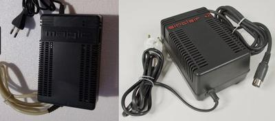
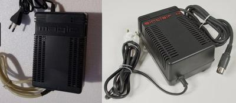
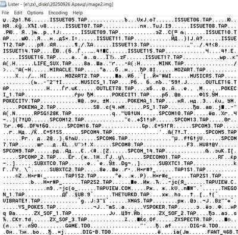
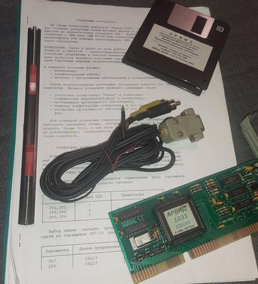
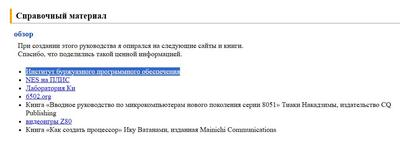
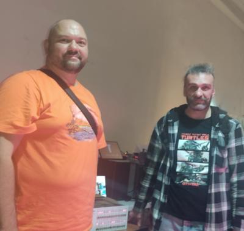
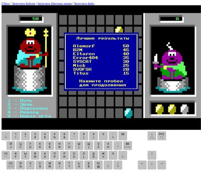
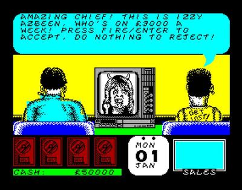

"Вот так начнёшь изучать фамильные портреты и, пожалуй, уверуешь в переселение душ"
Блок питания-то от Магика (и Кворума), оказывается, скопирован с БП от амстрадовского ZX Spectrum +2A/B 😳

Блок питания-то от Магика (и Кворума), оказывается, скопирован с БП от амстрадовского ZX Spectrum +2A/B 😳
И вот читаю я, значит, дискеты от Арвида, и на одной из них лежит только странный файл OSS3.BIN на 200 кило. Что-то меня заставило глянуть на образ через вьюер, и внезапно там на пустом месте вовсе не нули, а... какое-то оглавление спектрумского архива!
Арвид для скорости хранил индекс видеокассеты на жестком диске или дискете. Видимо, это остатки как раз такого индекса. Судя по названиям, там и с World of Spectrum файлы, и с Virtual TR-DOS, но особенно интересен неопознанный архив образов дискет с расширением TD0 (теледиск). Вообще, мне продавец дал еще видеокассету, на которой он думал что-то арвидом записано. Я, конечно, сразу побежал её в видак сувать, думал это от неё индекс. Но по факту там клипы Тани Булановой 😕. Не знаю, разберусь получше и может ещё ему напишу, авось найдет нужную.
Сами образа дискет в комменты кину. Их всего две, на второй там инсталлятор софта под винду.
Внезапно стал обладателем полного, по-видимому, комплекта Арвид. Это отечественная разработка, позволяющая писать АРхивы на ВИДеокассеты. Магнитофон используется обычный бытовой (рулится через ИК-диод), на кассету E-180 влазит порядка полутора гигабайт. Когда Авито подсунуло рекомендацию, я сперва даже не поверил — цена 700 рублей, таких цен уже лет пять не бывает. Была б подключена доставка, ушло б за 15 минут, но, к счастью, был только самовывоз. Оказалось, что продавец в 90-х работал в магазине радиотоваров и продавал там эти Арвиды. Магазин на Первомайской, 18 — думаю, все в Екб поняли, где это. Их там было два магазина, в один вход нормально, а второй в подвале, и вот в последнем. Забавно, я ведь там книжки по Спектруму покупал, и видимо как раз у этого продавца.
Очень хочу запустить. Когда читал описания (а раньше про Арвид писали много, и в прессе, и в интернете), всегда не верилось, что кто-то реально вот такую вот идею довел не просто до прототипа, а аж до серии, и оно работало, и даже стабильно. Выглядеть должно завораживающе.
(блуждаю через гуглотранслейт на сайте японского эмулятора Family Basic)
Вот уж чего мы не ожидали в 2025, так это новой русскоязычной книги по внутреннему устройству спектрумского Бейсика на 530 страниц! Помните брошюру "Тайники ZX", ну ту, с Соником на обложке? Вот по духу эта книга выглядит как её продолжение, что-то такое же экспериментаторски-хакерское для новичков. Но стилистика повествования тут совершенно неповторимая, по жанру это не справочник, а прямо цельная проза.
"ZX-Spectrum BASIC с Н00000ля" , автор Yuri80
https://zx-pk.ru/threads/36338-kniga-quot-zx-spectrum-basic-s-n00000lya-quot-(2025-god).html
https://drive.google.com/file/d/1-6eKfuMyhJvowwKd-qk7ADqShvsc8HWv/view
Еду домой, делать нечего, дай, думаю, отчет о Chaos Constructions напишу.
Вообще, это первый раз, когда я на демопати живьем. Я относительно много участвовал онлайн, у меня даже есть небольшая стопочка грамот с ДиХалта и одно второе место на Chaos Constructions. Но смотреть стримы — это, понятное дело, вовсе не то, что быть на патиплейс. И вот в этом году внезапно собрался и поехал. Взял с собой дочь, заодно ей и Питер показал.
Очень понравилось, что пати совмещено не с пьянкой (хотя вроде и это тоже), а с лекторием с докладами и с мастерклассами/семинарами. От этого у цц появился (а может и всегда был, просто через стримы это не чувствовалось) вайб хакерской конференции. У нас в УрФУ проводили подобную раньше, она была приурочена к соревнованию RuCTF и там были лекторы типа Дмитрия Склярова или людей из Digital Security. И это было прямо круто, но после ковида всë как-то заглохло. И вот тут на цц снова эта атмосфера людей, которые из всех компьютерных игр выбирают дизассемблер и Си.
Без прода на компо ехать как-то некрасиво, так что в гостинице перед сном кодил 256-byte интро. Эффект простой и основан на глюке оператора DRAW с тремя аргументами, который иногда вместо рисования дуги рисует сложные узоры. Но вызов DRAW блокирующий, а я туда насовал немного динамики на прерываниях. Там, в общем, получилось сильно не то, что было задумано, но ведь и компофиллеры тоже важны. Я безо всякого сарказма, наше 256-byte oldschool intro компо вышло очень представительным, 8 работ. А первое место занял просто какой-то отвал башки, это вероятно лучшие 256 байт для ZX в истории. Выставляться с ним в одном компо — это само по себе честь.
В других категориях тоже была масса крутых работ. Вообще, смотреть демо на большом экране — это ожидаемо совсем другой опыт, нежели смотреть в стриме. И сразу хочется повторить. Жаль в Екб пати, по слухам, было лишь одно, на рубеже тысячелетий. А до всех современных надо ехать.
В первый день поучаствовал в крутом семинаре по FPGA, который по времени плавно перетек в круглый стол по разработке компьютеров на FPGA. Теперь я, кажется, знаю ответ на главный вопрос, который мучает всех, никогда ничего не FPGA-шивших: Verilog! (вопрос, разумеется, про то, с какого языка начинать). Ни на семинаре, ни на круглом столе про VHDL никто ничего хорошего не сказал. Мнения о нем можно, в целом, свести к двум: "VHDL старый, на нем только деды пишут для космоса, и то по инерции" и "VHDL избыточно многословный и там, где на верилоге нужно две строки, на VHDL может понадобиться 30". Звучит достаточно убедительно. Буду вкатываться с верилога.
Вкратце про остальные семинары. Доклад Артёма Кашканова про пишущую машинку Роботрон больше всего запомнился тем, что, оказывается, если прицепить логический анализатор на все ноги процессора и снять лог работы, то потом записанное можно распарсить в красивую временную диаграмму. Нужно будет копнуть в ту сторону и узнать побольше про софт, который для такого используется.
Доклад про АОН Русь пропустил, он наложился на FPGA-семинар. Надеюсь, будет запись.
Впечатлил доклад про 3D графику. Никогда не задумывался, что авторы 3D-движков занимаются не столько кодингом, сколько наукой. Теперь я знаю, куда податься с моим PhD-дипломом, когда меня уволят за то, что я вместо работы по демопати катаюсь 😄
toxa сделал доклад с обзором возможностей геймбоя (оригинального и GBC). Мне тут все было более-менее знакомо, поэтому не хватило примеров кода и демонстрации демок. Но автор обещал в следующий раз провести мастер-класс.
Последним был доклад про современные синтезаторы Yamaha и их взлом. Выкачивание фулл-флэша через MIDI-разъем и всякое такое. В конце было музыкальное выступление, поэтому дочери именно этот доклад запомнился больше остальных.
Параллельно всему шла выставка ретрокомпов. Там было просто всë, от Апогея до станций Sun. И даже Микро-80, но о нëм я уже писал. Больше всего было, кажется, компов Criss CP/M - это тот AVR-based комп, который несколько лет назад был опубликован в журнале "Радио". Его автор оборудовал как минимум 4 полноценных рабочих места, плюс, кажется, было ещё сколько-то плат. Но вообще и спектрумов было немало. Из забугорного был Некст и 48+. Муромский музей привез Пентагон и АТМ-Турбо, Михаил Каа - Скорпион в аутентичном корветовском корпусе. Я глядя на это задумался - мы же вот знаем из легенд, что на древних пати люди дописывали проды прямо на патиплейс - но ведь не на дорогущих же в ту пору ноутбуках они это делали. Неужели они тоже свои "корветовские" ящики с собой привозили? А ведь ещё и монитор нужен... По итогам экспозиции организаторы выдали специальный приз, взял его Микро-80.
К сожалению, места на выставке было катастрофически мало, поэтому бОльшую часть экспонатов пощупать толком не удалось. А вот на стенде ретро-барахолки у Михаила Судакова я сквозь толпу все-таки пробился и затарился и журналами себе (шутка ли — Sinclair User за май 1982 с анонсом ZX Spectrum!), и кассетами на полку анонимному коллекционеру. Может даже удастся видео про них сделать.
Сгонял ещё, кстати, на "Уделку", крупнейшую питерскую барахолку. Теперь зачем-то везу с собой здоровый поворотный кронштейн для монитора, купленный за 10 рублей 😄 Вообще, эта рубрика "все по 10 рублей" мне там понравилась. В Екб в таком формате тоже иногда работает пара точек барахолки, но там мятые книги, ржавые ложки и всякое такое. А вот на "Уделке", кажется, можно и немало интересного нарыть, если пораньше прийти и побольше времени провести.
Ну, в общем, спасибо всем организаторам, участникам, докладчикам и посетителям, это были самые крутые выходные лета. Keep the scene alive и вот это вот всё.
Фото, ради которого стоило приехать в Питер на Chaos Constructions (пусть и с поправкой на то, что дочь пока не умеет фоткать). Алексей Морозов aka vinxru/alemorf и его Микро-80, за созданием которого следит весь ретрокомпьютерный рунет последние два года. Нащелкался тумблерами всласть, вручную забив добрых полстроки экрана символами. Эта машина реально ввергает в благоговейный трепет.
Стоит ли говорить, что я в свое время и на ютубе-то зарегался, чтоб подписаться на vinxru. Да и канал мой сильно вдохновлен его видео.
Новый видос! Еще в прошлом году довелось поспектрумировать на ZX Spectrum Next, и вот только сейчас получилось смонтировать. В программе распаковка, обзор, зайчатки программирования и осмотр внутренностей
Кстати, то, что я на третьем месте в дефолтной таблице в лёхиных "Цветных линиях" — это одна из важнейших строк в моём резюме 😄 Релиз под каждую платформу смотрю, и каждый раз приятно. А компилятор очень интересный. Вообще, беда с Си компиляторами на 8080/z80
Цитируемое сообщение (оригинал в Telegram "Алексей Морозов - Хобби и ретрокомпьютеры")
Привет Народ! Я закончил прибирать исходники компилятора Си для процессора 8080. А точнее, мне надоело это делать. Все иходники выложены сюда.
https://github.com/alemorf/c8080
Доделывать компилятор буду, когда буду им сам пользоваться.
Что бы проверить компилятор (после приборки) я решил перенести игру "Цветные Линии" на Микро 80. Не только для проверки. Нужна хотя бы одна цветная игра. Иначе, зачем я делал цвет?
В знакогенераторе компьютера Микро 80 есть символы делящие знакоместо на 4 равные части. Текстовый экран 64x25 превращается в графический 128x50. Вчера и сегодня я попробовал нарисовать графику для игры в таком низком разрешении. Что то даже получилось. Вы прямо сейчас можете запустить игру в online-эмуляторе. Для этого откройте эмулятор и нажмите вверху страницы "Загрузить Цветные линии".
https://alemorf.github.io/micro80_emulator/index.html?ColorLines
Недописанные исходники игры тут
https://github.com/alemorf/c8080/tree/main/examples/lines_for_micro80
Прощай, Izzy Azbeen 😢
В 2014 я плюнул на всё и сгонял в Бельгию на Black Sabbath. Рад, что удалось увидеть легенду вживую.
{kind=link}
{kind=link}
{kind=link}
{kind=link}
{kind=link}
{kind=link}
{kind=link}